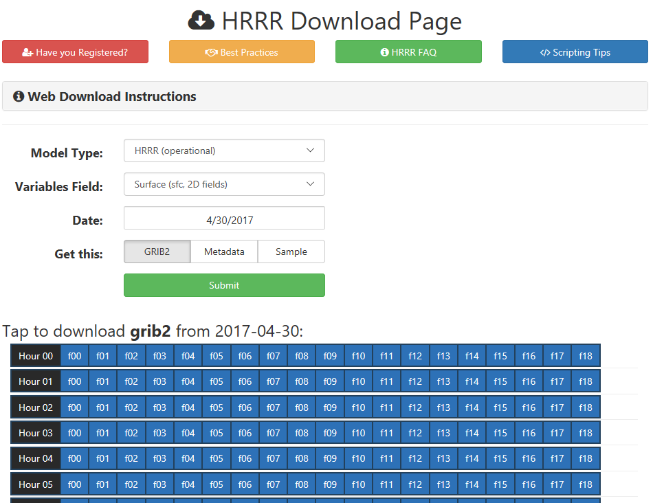

HRRR Archive at the University of Utah
Frequently Asked Questions
About this HRRR archive
What is the HRRR archive?
The HRRR archive is a collection of output from NCEP's High Resolution Rapid Refresh model. This is a model developed by NOAA ESRL and is run operationally every hour at NCEP. It continues to be developed by ESRL.
The HRRR generates hourly forecasts gridded at 3 km for 18 hours over the continental United States making it the highest spatial and temporal resolution forecast system run by NCEP.
HRRR analyses and forecasts are exceptionally valuable to the research community. However, an official HRRR archvie does not exist. We began archiving HRRR data in April 2015 to support research efforts at the University of Utah. Instead of downloading all available files, we only download files most useful to accomplish our research efforts. For the time being, we are making the archive publicly accessible for research purposes.
Please understand that HRRR grib2 files are large. For instance, sfc files are >120 MB and prs files are >380 MB each. If you download a day's worth of prs analyses, thats over 9 GB!
Output files, in grib2 format, contained in the archive include:
- Operational HRRR
- Surface (sfc) fields for analyses (beginning April 18, 2015) and forecast hours (beginning July 15, 2016)
- File format: hrrr.t00z.wrfsfcf00.grib2
- File size: ~120 MB
- Bufr files also available for KSLC, KODG, and KPVU
- Pressure (prs) fields for analyses (beginning April 18, 2015)
- File format: hrrr.t00z.wrfprsf00.grib2
- File size: ~380 MB
- Surface (sfc) fields for analyses (beginning April 18, 2015) and forecast hours (beginning July 15, 2016)
- Experimental HRRR
- Surface (sfc) fields for analyses (beginning December 1, 2016)
- File format: hrrrX.t00z.wrfsfcf00.grib2
- File size: ~120 MB
- Surface (sfc) fields for analyses (beginning December 1, 2016)
- Alaska HRRR (experimental)
- Surface (sfc) fields for analyses and forecast hours (beginning September 1, 2016)
- File format: hrrrAK.t00z.wrfsfcf00.grib2
- File size: ~6 MB
- Only selected variables retained.
- Pressure (prs) fields for analyses (beginning September 1, 2016)
- File format: hrrrAK.t00z.wrfprsf00.grib2
- File size: ~205 MB
- Surface (sfc) fields for analyses and forecast hours (beginning September 1, 2016)
Some days and hours in our archive may not be available. Either the forecast wasn't run that hour (typical for the experimental models), or our download scripts failed to download everything.
Where does the HRRR output come from?
The operational HRRR (hrrr) is downloaded via HTTP from the NOMADS server.
Experimental HRRR (hrrrX) and HRRR Alaska (hrrrAK) are downloaded via FTP from NOAA ESRL (credentials required).
What version of HRRR is in this archive?
HRRRv1 was the operational model prior to August 23, 2016. We downloaded the operational HRRR from here: http://nomads.ncep.noaa.gov/pub/data/nccf/nonoperational/com/hrrr/prod/. Although the URL says "nonoperational", it was the operational HRRR. The files just hadn't been moved to the operational space.
HRRRv2 was implemented at NCEP on August 23, 2016 for the 12z run. That day I began downloading from the new URL: http://nomads.ncep.noaa.gov/pub/data/nccf/com/hrrr/prod/.
For more details on the HRRRv2 implementation, check out the following announcement: http://www.nws.noaa.gov/om/notification/tin16-26rap_hrrrraaa.htm
HRRRv3 is the current experimental version under development and testing at ESRL.
When do we download the HRRR data?
HRRR output for each day is downloaded from the NOMADS and ESRL servers each evening (Mountain Time) after 0000 UTC. It takes a few hours to download everything. So if you are looking for today's HRRR data, you'll have to wait until after midnight. We first download HRRR-Alaska, then HRRR-X, then the operational HRRR (that one takes the longest because we get the most from it.)
This HRRR archive is not meant to be used for real-time or operational products.

Vision for the Future
At the 2017 Annual AMS meeting I talked with a guy on the the AMS Board on Data Stewarship. He said the lack of a HRRR archive was one concern brought up at their board meeting.
Archiving high resolution model data is an expensive task. This is a growing issue in the atmospheric science community as we move to higher resolution models that generate terabytes of data annually. Perhaps the solution is in cloud computing where the archive can be kept in one place and researchers can use cloud resources to process the data, perform analyses, and initialize WRF simulations without downloading the model output on their own computers. It would especially be nice if you could mine for the exact data you wanted from the model output (a specific variable at a point or subgrid for a range of date/times). Perhaps model data needs to be stored in HDF5 format rather than grib2.
Until that happens, I would like to make this archive easily available to everyone to demonstrate the interest and need for having such an archive. This archive has already proven beneficial to many researchers with many applications.
In the future, it is possible to have server-side data processing that generate time series or wind roses for point locations in the HRRR model. My current methods for doing this are extreamly ineffiecient becuase they still require dowloading a temporary file for a single variable of the entire CONUS grid.
In short, this project is turning into a classic case of one of my favorite children's books If You Give A Mouse A Cookie where starting one thing has grown and continues to grow into something bigger.
Who is archiving the HRRR data?
The HRRR archive at the University of Utah is managed by the MesoWest group on resourses at Utah's Center for High Performance Computing.

Why do we archive the HRRR?
While you can find current HRRR output on the NOMADS server, there is no official HRRR archive that is publicly and easily available, to our knowledge. This HRRR archive has been created to support various research endeavours in the Department of Atmospheric Sciences at the Univerisity of Utah. Things we do include:
- Initialize the Weather Research and Forecast (WRF) model with HRRR analyses as initial and boundary conditions. More info here.
- Model verification, where HRRR analyses and forecasts are compared to observed conditions.
You are welcome to use the archive for your own research, but as a courtesy, please register and read the Best Practices before downloading from the archive (click buttons at top).

Where is the University of Utah HRRR archive?
The physical archive is located at the University of Utah Downtown Data Center in Salt Lake City, Utah. It is hosted on Utah's Center for High Performance Computing PANDO archive storage system. This archive system is similar to Amazon's S3 storage, but this is less expensive. We are currently using almost 20 TB of our 30 TB allocation. At the current storage rate (~65 GB/day) I expect the S3 archive will be full around mid-August 2017. We will buy more storage if a proposal is funded, otherwise we'll have to remove the HRRR forcast grids if we want to continue saving HRRR data.
But you probably aren't interested in it's physical location.
You want to know where you go to download from it. Our HRRR archive
is made available for research purposes.
We only ask that you fill out the registration form to help us
keep track of total usage and it's popularity.
After registering you will be redirected to the download page.
There you will also find instructions for writing your own download
scripts.
Register to download HRRR

You may also be interested in the grib2 .idx files (metadata), which contain the byte range for each of the variables in the grib2 file. You can access those here and also on the download page by selecting the "metadata" button.
Again, the actual download URL structure and tips to write your own scripts to download from the archive will be revealed upon completion of our short registration form (After registering, I suggest bookmarking the web download interface page).
What days are available to download?
We began downloading HRRR analyses for each hours on April 18, 2015 and have continued to download since then (with some hiccups here and there).
Prior to July 27, 2016 only the analysis hours for the pressure and surface fields were downloaded from the NOMADS server.
On July 27, 2016 I began downloading the surface field forecast hours. (Unfortunately, the pressure field files are too large, ~315 MB/hr, and we have decided not to archive the forecasted pressure fields.)
The HRRR download page will give you an idea if the files you are looking for are available.
In summary:
- 2015-04-18: Archive begins with analysis hours only
- 2016-07-27: started grabbing 15 hour sfc forecasts.
- 2016-08-24: started grabbing 18 hour sfc forecasts (HRRRv2 made operational).
- 2016-09-01: started grabbing select variables of experimental HRRR Alaska.
- 2016-12-01: started grabbing experimental HRRR surface analysis.
- 2017-03-01: HRRR archive moved from compressed space to S3 storage.
Who uses the HRRR archive?

Many people are interested in the HRRR archive, including yourself (obviously, or else you wouldn't have Googled 'HRRR archive').
The initial purpose of this HRRR archive was to serve atmospheric science research at the University of Utah, particularly my own research for my Master and PhD degrees. For example, I used HRRR analyses to initialize WRF simulations.
The archive is searched quite often on Google by people like you (about one click every two or three days). Since this archive has been published online I have received inquiries and download requests from National Weather Service employees, a researcher at the National Institute of Standards and Technology, a United State Air Force Captain, commercial wind power companies, university professors, graduate students, post docs, and many others.
Gallery
Initialize WRF
I use the HRRR to initialize WRF's boundary and initial conditions Check out my instructions for initializing WRF with the HRRR here: http://home.chpc.utah.edu/~u0553130/Brian_Blaylock/hrrr.html
Composite Percentiles
I created 2-year "climatologies" or composites of wind speed, temperature, and other variables for every hour of the day for an almost two year period. These may be used for MesoWest range checks to flag suspect or bad observations.
You can view all my climatological plots in the gallery here. I managed to get the computation time to find the max, min, and mean values for the ~2 years of data down to 20 minutes using 30 processors, (much better than 5 hours on a single processor). Calculating percentiles takes quite a bit more time and memory.
The HRRR analyses mean winds are comparable with the results of James et al. 2017.


Case Studies
Investigate gravity waves in St. Louis and thunerstorms in Atlanta.


Inversion Strength
Quantify inversion strength during the Utah Fine Particulate Air Quality Study, January 2017
New England Snow Storm, March 13-14 2017
Great Salt Lake Surface Temperature (before HRRR assimilation was fixed)
HRRR versus HRRRx analysis maps
Very inefficient and slot pages that create maps showing the difference between HRRR and HRRRx
here.
Tips for CHPC Users
So you work/study at the University of Utah, too? Cool! Go Utes!! Here are a few helpful tips that will make your life easier. That is, if your life involved using HRRR data from our handy archive. Please share with me cool stuff you learn!
Where is the archive?
We keep the most recent month or two in the horel-group/archive Modifiy the date directory for your day of interest.
Then navigate to the HRRR directory you are interested:
- hrrr
- hrrrX
- hrrr_alaska
Downloading HRRR and moving HRRR data to the S3 Archvie
If you are interested in our process for downloading and archiving HRRR data, check out the GitHub repository. See this github repository
How can I download multiple days at once?
This is now outdated, since you should download from the S3 archive. Register for download instructions.
How do I get the HRRR data if what I'm looking for is compressed?
If you find that what you're looking for is compressed, follow the following instructions to get what you need:
-
Copy the models.tar.gz file to your own space. Yes, this is large (~20 GB). It contains all the model data we archive (I warned you that this was inefficient).
-
Before untarring the entire directory, you can make sure it contains the files you need with something like this:
less -p /hrrr/hrrr.t models.tar.gz -
You can untar the entire file, but that would take a looooonng time, and you don't need everything in that file anyways.
You can extract just the HRRR data with this one-liner...(still may take a bit of time)
tar -xzvf models.tar.gz 20160101/models/hrrr/Or you can get more creative and use the following to get just the pressure fields. (In this case it helps to know the contents of the tarred file). Starting in the directory you wish to copy the files into, type...
tar -zxvf models.tar.gz --wildcards --no-anchored 'hrrr.t*z.wrfprsf00.grib2'